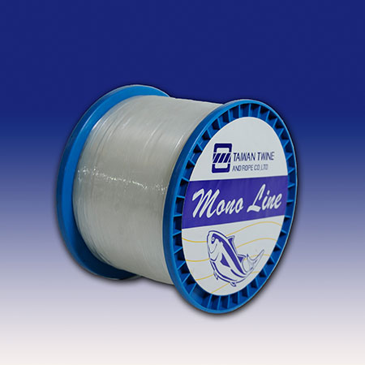
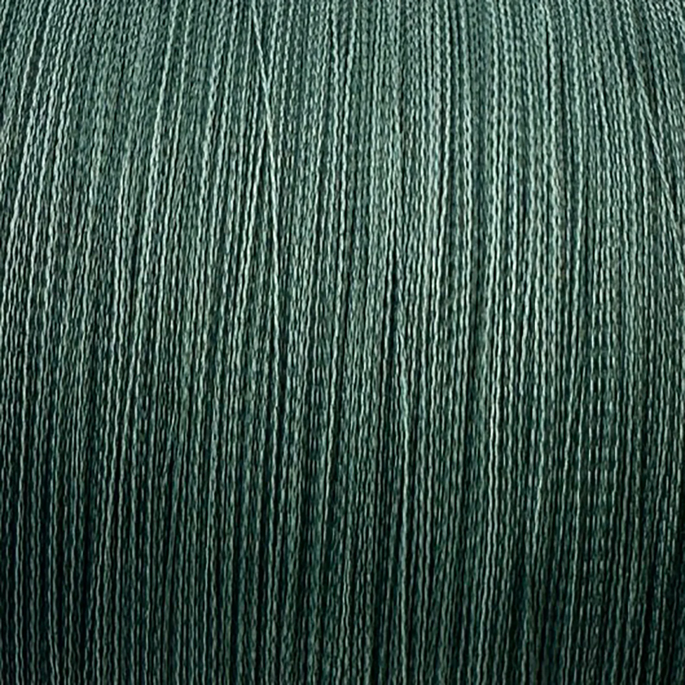
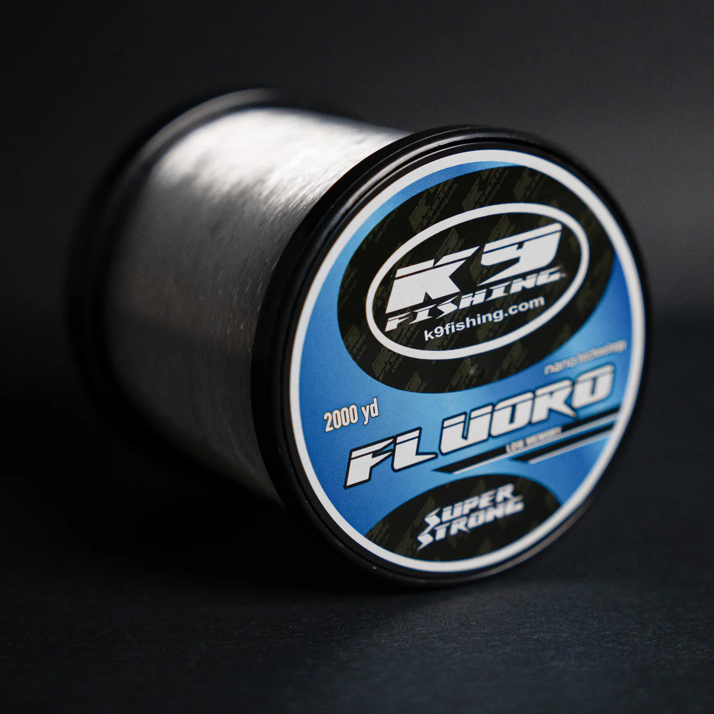

Monofilament
Monofilament is a popular, inexpensive fishing line made from a single strand of nylon, known for its high knot strength, buoyancy, and flexibility. While its stretch helps prevent hook pulls, it reduces sensitivity. It is ideal for topwater fishing due to its ability to float, though it degrades in UV light.

Braided
Braided fishing line offers an incredibly high strength-to-diameter ratio, zero stretch, and high sensitivity, making it ideal for fishing in heavy cover and long-distance casting. Its lack of memory ensures smooth, long casts, while its durability allows for multiple seasons of use.

Fluorocarbon
Fluorocarbon line is a premium, high-density fishing line known for being nearly invisible underwater, extremely sensitive, and highly abrasion-resistant. It sinks faster than monofilament and has minimal stretch, making it ideal for deep-diving baits, jigs, and clear water.